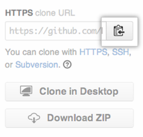
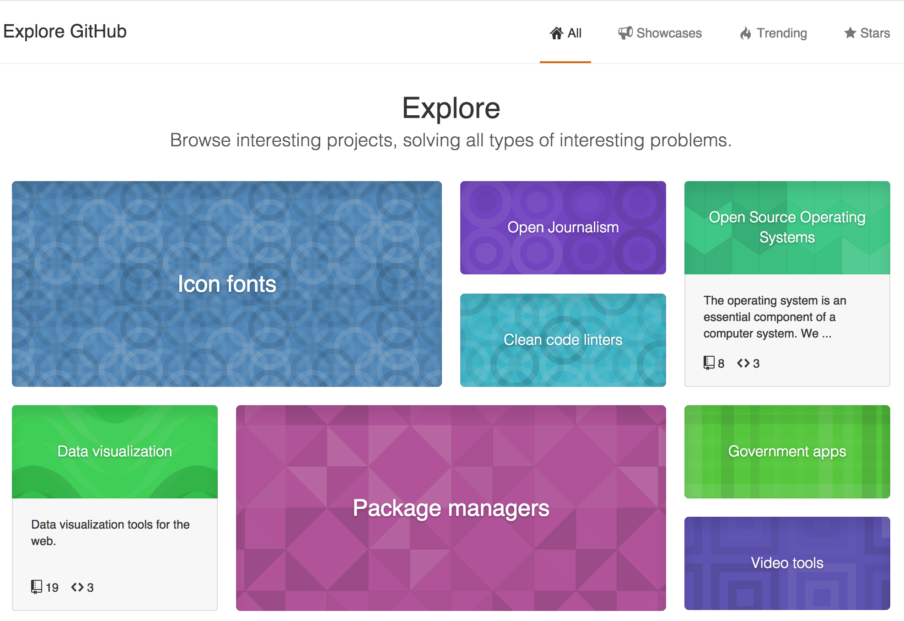

A fork is a copy of a repository. Forking a repository allows you to freely experiment with changes without affecting the original project.
Most commonly, forks are used to either propose changes to someone else's project or to use someone else's project as a starting point for your own idea.
Propose changes to someone else's project
A great example of using forks to propose changes is for bug fixes. Rather than logging an issue for a bug you've found, you can:
- Fork the repository.
- Make the fix.
- Submit a pull request to the project owner.
If the project owner likes your work, they might pull your fix into the original repository!
Use someone else's project as a starting point for your own idea.
At the heart of open source is the idea that by sharing code, we can make better, more reliable software. In fact, when you create a repository on GitHub, you have a choice of automatically including a license file, which determines how you want your project to be shared with others.
Fork an example repository
Forking a repository is a simple two-step process. We've created a repository for you to practice with!
- On GitHub, navigate to the octocat/Spoon-Knife repository.
- In the top-right corner of the page, click Fork.

That's it! Now, you have a fork of the original octocat/Spoon-Knife repository.
Keep your fork synced
You might fork a project in order to propose changes to the upstream, or original, repository. In this case, it's good practice to regularly sync your fork with the upstream repository. To do this, you'll need to use Git on the command line. You can practice setting the upstream repository using the same octocat/Spoon-Knife repository you just forked!
Step 1: Set Up Git
If you haven't yet, you should first set up Git. Don't forget to set up authentication to GitHub from Git as well.
Step 2: Create a local clone of your fork
Right now, you have a fork of the Spoon-Knife repository on GitHub, but you don't have the files in that repository on your computer. Let's create a clone of your fork locally on your computer.
- On GitHub, navigate to your fork of the Spoon-Knife repository.
- In the right sidebar of your fork's repository page, click to copy the clone URL for your fork. This will either be an HTTPS or SSH clone URL, depending on how you authenticate to GitHub. 
- Open Terminal (for Mac and Linux users) or the command line (for Windows users).
-
Type
git clone, and then paste the URL you copied in Step 2. It will look like this, with your GitHub username instead ofYOUR-USERNAME:git clone https://github.com/YOUR-USERNAME/Spoon-Knife -
Press Enter. Your local clone will be created.
git clone https://github.com/YOUR-USERNAME/Spoon-Knife # Cloning into `Spoon-Knife`... # remote: Counting objects: 10, done. # remote: Compressing objects: 100% (8/8), done. # remove: Total 10 (delta 1), reused 10 (delta 1) # Unpacking objects: 100% (10/10), done.
Now, you have a local copy of your fork of the Spoon-Knife repository!
Step 3: Configure Git to sync your fork with the original Spoon-Knife repository
When you fork a project in order to propose changes to the original repository, you can configure Git to pull changes from the original, or upstream, repository into the local clone of your fork.
- On GitHub, navigate to the octocat/Spoon-Knife repository.
- In the right sidebar of the repository page, click to copy the clone URL for the repository.
- Open Terminal (for Mac and Linux users) or the command line (for Windows users).
- Change directories to the location of the fork you cloned in Step 2: Create a local clone of your fork.
- To go to your home directory, type just
cdwith no other text. - To list the files and folders in your current directory, type
ls. - To go into one of your listed directories, type
cd your_listed_directory. - To go up one directory, type
cd ...
- To go to your home directory, type just
-
Type
git remote -vand press Enter. You'll see the current configured remote repository for your fork.git remote -v # origin https://github.com/YOUR_USERNAME/YOUR_FORK.git (fetch) # origin https://github.com/YOUR_USERNAME/YOUR_FORK.git (push)
-
Type
git remote add upstream, and then paste the URL you copied in Step 2 and press Enter. It will look like this:git remote add upstream https://github.com/octocat/Spoon-Knife.git -
To verify the new upstream repository you've specified for your fork, type
git remote -vagain. You should see the URL for your fork asorigin, and the URL for the original repository asupstream.git remote -v # origin https://github.com/YOUR_USERNAME/YOUR_FORK.git (fetch) # origin https://github.com/YOUR_USERNAME/YOUR_FORK.git (push) # upstream https://github.com/ORIGINAL_OWNER/ORIGINAL_REPOSITORY.git (fetch) # upstream https://github.com/ORIGINAL_OWNER/ORIGINAL_REPOSITORY.git (push)
Now, you can keep your fork synced with the upstream repository with a few Git commands. For more information, see "Syncing a fork."
Next Steps
The sky's the limit with the changes you can make to a fork, including:
- Creating branches: Branches allow you to build new features or test out ideas without putting your main project at risk.
- Opening pull requests: If you are hoping to contribute back to the original repository, you can send a request to the original author to pull your fork into their repository by submitting a pull request.
Find another repository to fork
Every public repository on GitHub can be forked, so find another project you're interested in and get forking!
Explore GitHub is a great place to find projects that pique your interest. The content changes all the time, so you can visit that page often to see what's new and cool on GitHub.

Celebrate
You have now forked a repository, practiced cloning your fork, and configured an upstream repository. What do you want to do next?
- Set Up Git
- Create A Repository
- Fork A Repository
- Be Social